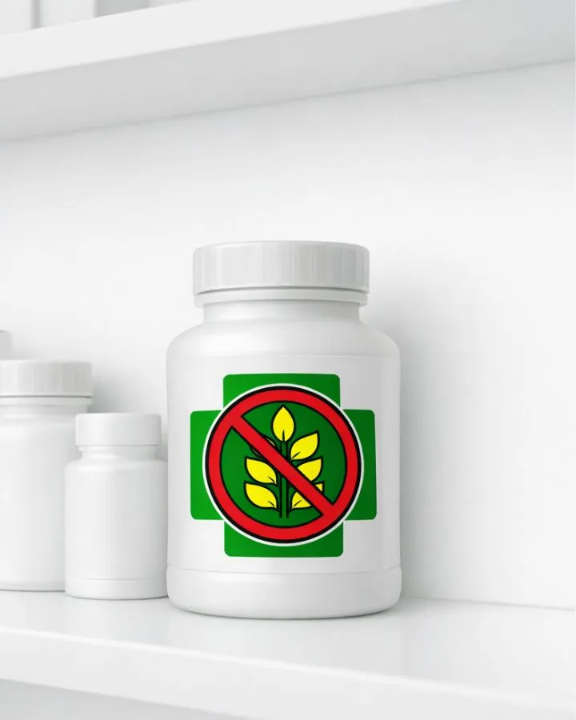

Remedio sin gluten
Búsqueda rápida, segura y libre de gluten.
Escribe el término y presiona Enter o el botón Consultar para ver si es libre de gluten.
Rigor y transparencia en cada consulta
Nuestra base de datos procesa y cruza información oficial para brindar respuestas claras. La verificación constante asegura que los pacientes y profesionales tengan acceso a datos actualizados sobre excipientes y trazabilidad de los principios activos, reduciendo el riesgo de exposición al gluten.
Herramienta de asistencia
Diseñada bajo estrictos estándares de accesibilidad digital (WCAG 2.2), esta plataforma agiliza la toma de decisiones en el mostrador o en el consultorio. Recordá: esta consulta no reemplaza el criterio profesional ni la lectura del prospecto vigente.
Marcas aliadas de la comunidad
Lista de empresas e instituciones que patrocinan este proyecto.